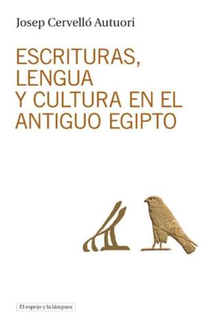

Escrituras, lengua y cultura en el antiguo Egipto
Reseña por Jorge I. Zuluaga

Ver reseña en GoodReads (necesita cuenta)
El libro esta impecablemente escrito y juiciosamente organizado. Parece un libro académico (esta lleno de referencias cruzadas) y en efecto se usa como tal como lo menciona su autor, pero se puede leer perfectamente como una colección de ensayos sobre la lengua, la escritura y la cultura egipcias. No soy egiptólogo, ni filólogo, ni historiador. Pero lo disfrute como niño pequeño, tal vez precisamente porque no soy ninguno de los anteriores.
El libro presenta, de una manera muy original y atractiva, una historia de la lengua egipcia (¿o debería decir mejor, después de leer el libro, de las "lenguas egipcias"?) desde su surgimiento en el Valle del Nilo en el cuarto milenio antes de la era común, donde nació también el primer sistema de escritura de la historia según lo muestran las últimas evidencias arqueológicas divulgadas por el profesor Josep Cervelló en el libro, hasta su "extinción" en el siglo 17 cuando murió el o la última ciudadana Egipcia que hablaba Copto en la vida cotidiana (el Copto sigue vivo como lengua litúrgica de la iglesia cristiana con el mismo nombre, de la misma manera que el Latín lo hace todavía entre el clero de la iglesia católica).
El resultado es un viaje asombroso. El profesor Cervelló no escatima recursos para transmitir los detalles sobre como ocurrió la transformación increíble de una lengua de nómadas (¿?), pastores y agricultores, alrededor de la cual se inventó el más increíble sistema de escritura de la antigüedad (ni siquiera superado por otras lenguas ideográficas como aquellas de la familia del Chino o las escrituras mesoamericanas), pasando por su complejo desarrollo en el primer país de la historia, el país de las Dos Tierra, hasta llegar al "moderno" Copto, la única lengua conocida en el presente en la que quedan los vestigios fonéticos y morfosintácticos de la lengua extinta de los señores del buitre y la cobra.
Como dice el profesor Cervelló, el Egipcio es posiblemente la única lengua de la que tenemos evidencias escritas de su evolución a lo largo de más de 4.000 años de historia. Los egipcios no solo construyeron edificios de piedra para ser admirados por la eternidad. Dejaron un legado en su lengua que no se agota. ¡Larga vida a la cultura Egipcia!.
Como era de esperarse en cualquier libro sobre la lengua y la escritura Egipcia, el libro tiene un aparte dedicado a la escritura jeroglífica (Capítulo 4), que si bien no es tan detallado y práctico como el que encontrarán en las cartillas que abundan sobre el tema, es ¡fascinantemente riguroso! (al menos para los menos versados como yo). Personalmente, y como dije al principio, después de intentar leer varios libros sobre el tema, encontré en ese capítulo las respuestas a algunas preguntas que me había hecho sobre la lengua y que no encontré en guías más prácticas.
Yo le recomendaría a cualquier #KemetLover que este intentando comenzar a aprender algo sobre la lengua Egipcia, que comenzará justamente con ese capítulo. Entiendo bien que los expertos en lenguas, hombres y mujeres, recomienden una aproximación más práctica para iniciarse en el Egipcio antiguo (aprender a leer las primeras inscripciones, leer el nombre de reyes, reinas y príncipes en cartuchos, escribir su propio nombre con glifos, etc.), pero dada la naturaleza de la lengua (una lengua "muerta", usada principalmente con fines religiosos) me parece que es más importante antes de intentar desarrollar habilidades más prácticas, conocer teóricamente la estructura de la lengua y la escritura que es justamente lo que intenta hacer el profesor Cervelló en el texto. Digo intenta porque estoy seguro que el tema no se agota en un solo libro.
El relato didáctico de cómo Champollion descifró las claves de la escritura jeroglífica (Capítulo 3) y la historia de como la escritura jeroglífica inspiró la invención y posterior evolución de los alfabetos semíticos y finalmente de los alfabetos griego y latino (Capítulo 6) ¡son increíbles!. Si no se tiene paciencia para leer el resto del libro (algunos apartes son verdaderamente densos y académicos), debería al menos leerse esos dos capítulos.
Este libro es un texto obligado para cualquier #KemetLover. Si son de los que les gusta cultivar el ba y prepararlo para un millón de años viviendo en los campos de Aarú, ¡no dejen de leerlo!